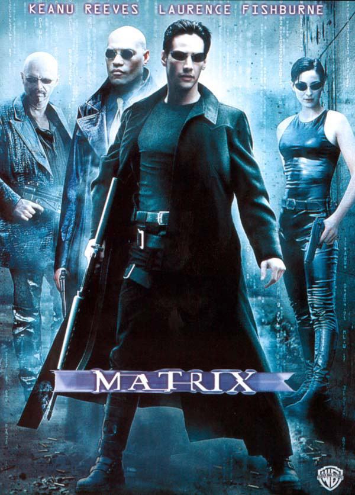
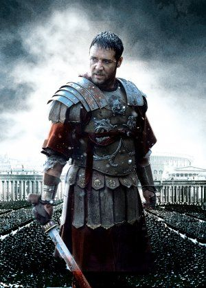

"Ce n’est pas le critique qui est digne d’estime, ni celui qui montre comment l’homme fort a trébuché ou comment l’homme d’action aurait pu mieux faire. Tout le mérite appartient à celui qui descend vraiment dans l’arène, dont le visage est couvert de sueur, de poussière et de sang, qui se bat vaillamment, qui se trompe, qui échoue encore et encore – car il n’y a pas d’effort sans erreur et échec -, mais qui fait son maximum pour progresser, qui est très enthousiaste, qui se consacre à une noble cause, qui au mieux connaîtra in fine le triomphe d’une grande réalisation et qui, s’il échoue après avoir tout osé, saura que sa place n’a jamais été parmi les âmes froides et timorées qui ne connaissent ni la victoire ni l’échec." Theodore Roosevlt
Yes Man"Carl Allen est au point mort. No future... jusqu'au jour où il s'inscrit à un programme de développement personnel basé sur une idée toute simple : dire oui à tout ! Carl découvre avec éblouissement le pouvoir magique du "Yes", et voit sa vie professionnelle et amoureuse bouleversée..." |
||
|  |
Matrix"Programmeur anonyme dans un service administratif le jour, Thomas Anderson devient Neo la nuit venue. Sous ce pseudonyme, il est l'un des pirates les plus recherchés du cyber-espace. A cheval entre deux mondes, Neo est assailli par d'étranges songes et des messages cryptés provenant d'un certain Morpheus. Celui-ci l'exhorte à aller au-delà des apparences..." | |
|  |
Gladiator"Le général romain Maximus est le plus fidèle soutien de l'empereur Marc Aurèle, qu'il a conduit de victoire en victoire avec une bravoure et un dévouement exemplaires. Jaloux du prestige de Maximus, et plus encore de l'amour que lui voue l'empereur, le fils de MarcAurèle, Commode, s'arroge brutalement le pouvoir, puis ordonne l'arrestation du général et son exécution. Maximus échappe à ses assassins..." |